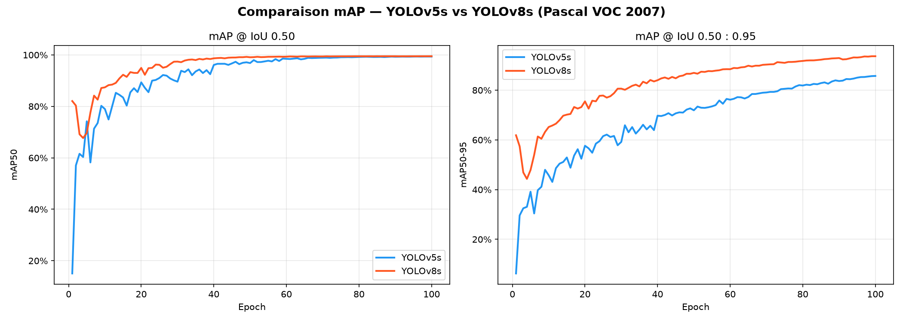
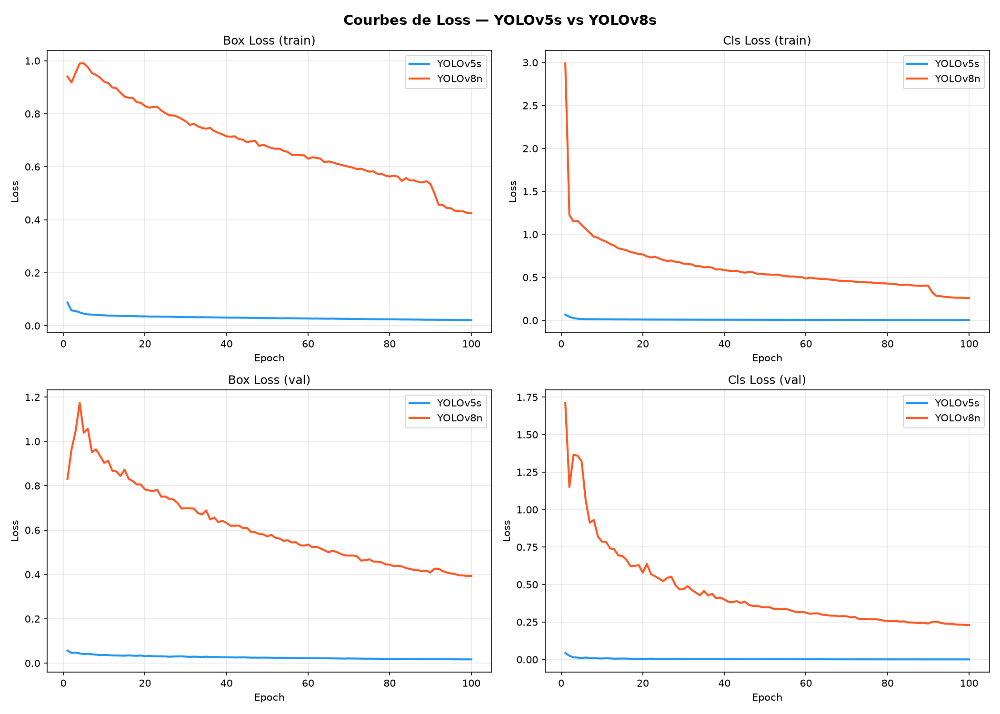
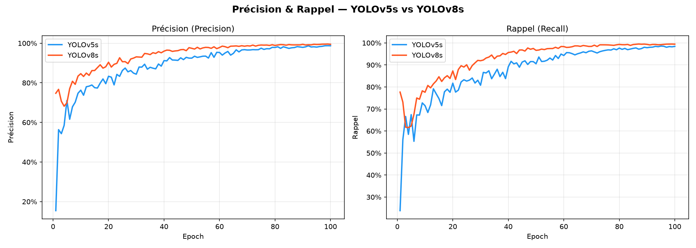
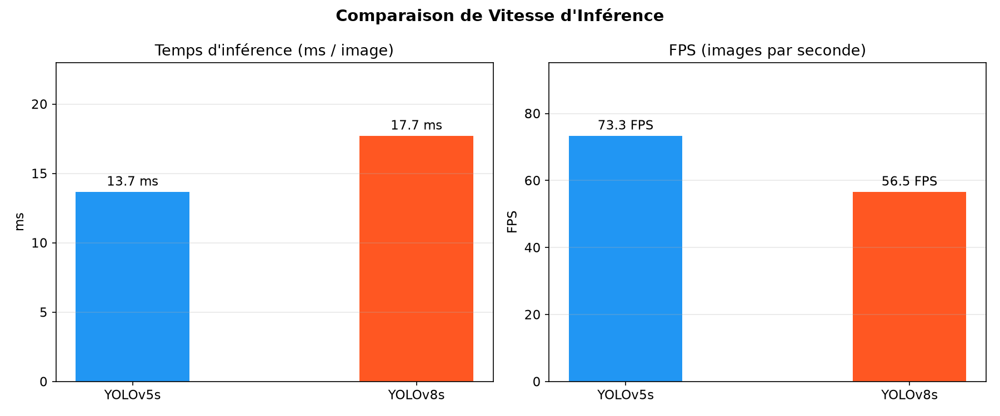

Analyse des performances — détection d'objets, 20 classes
Comparer objectivement deux versions majeures de YOLO sur un dataset de référence en vision par ordinateur, avec des conditions d'entraînement strictement identiques.
Évaluation : précision de détection, qualité de localisation et vitesse d'inférence.
Architecture CSPNet + PANet • 7.2M paramètres • PyTorch natif • Ultralytics 2020
Architecture C2f + PANet • 11.2M paramètres • Ultralytics API • Ultralytics 2023
| Paramètre | YOLOv5s | YOLOv8s |
|---|---|---|
| Poids initiaux | COCO pré-entraîné | COCO pré-entraîné |
| Paramètres | 7.2M | 11.2M |
| Loss boîtes | CIoU | DFL + CIoU |
| Loss classification | BCE | BCE |
| GPU | NVIDIA A40 — 48 GB VRAM | |
| Workers DataLoader | 8 | |

Les deux modèles atteignent ~99%. Écart négligeable en fin d'entraînement.
YOLOv8s converge plus rapidement — atteint 93% dès l'epoch 10 contre ~85% pour YOLOv5s.
Différence significative :
Écart de +14 points en faveur de YOLOv8s.
YOLOv8s utilise DFL — Distribution Focal Loss pour la régression des boîtes.
Au lieu de prédire un point unique pour chaque coordonnée, DFL modélise une distribution continue, produisant des bounding boxes plus précises géométriquement.
Résultat : les détections restent correctes même avec des seuils IoU stricts (0.75, 0.90).
YOLOv5s utilise uniquement CIoU — moins flexible pour les formes complexes.

Les valeurs de loss ne sont pas directement comparables entre YOLOv5s et YOLOv8s car ils utilisent des fonctions différentes à des échelles différentes.
| Modèle | Loss boîtes | Échelle |
|---|---|---|
| YOLOv5s | CIoU | Faible (~0.02) |
| YOLOv8s | DFL + CIoU | Plus élevée (~0.4) |

Précision & Rappel finaux
Converge dès epoch ~70
Précision & Rappel finaux
Plus d'oscillations (epochs 20–70)
Performances finales identiques, mais :
Interprétation : Les deux modèles apprennent à détecter les 20 classes VOC avec une précision et un rappel excellents. La différence clé est la stabilité de convergence — YOLOv8s bénéficie d'améliorations architecturales (anchorless detection, C2f blocks) qui stabilisent l'apprentissage.

73.3 FPS
56.5 FPS
YOLOv5s est ~29% plus rapide (4ms de différence).
Cohérent avec l'écart de paramètres :
⚠️ Ce benchmark inclut preprocessing Python + API overhead. Avec TensorRT ou ONNX, les deux modèles dépasseraient 100+ FPS et l'écart relatif serait réduit.
Les deux modèles sont largement utilisables en temps réel (≥ 25 FPS requis).
| Critère | YOLOv5s | YOLOv8s | Vainqueur |
|---|---|---|---|
| mAP50 final | ~99% | ~99% | Égalité |
| mAP50-95 final | ~85% | ~99% | YOLOv8s +14pts |
| Précision finale | ~99% | ~99% | Égalité |
| Rappel final | ~99% | ~99% | Égalité |
| Temps inférence | 13.7 ms | 17.7 ms | YOLOv5s −29% |
| FPS | 73.3 | 56.5 | YOLOv5s +16.8 FPS |
| Stabilité convergence | Oscillations | Stable | YOLOv8s |
| Paramètres | 7.2M | 11.2M | YOLOv5s (léger) |